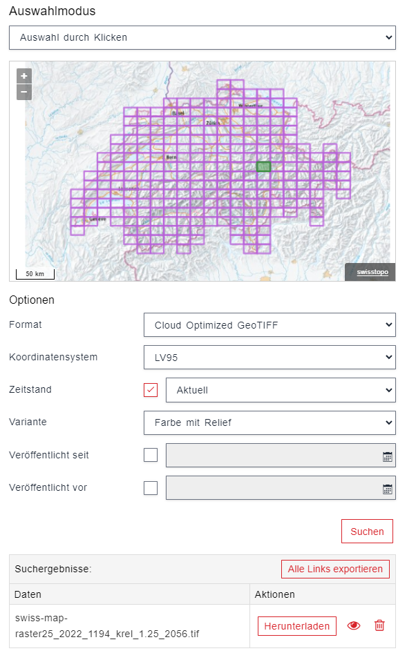
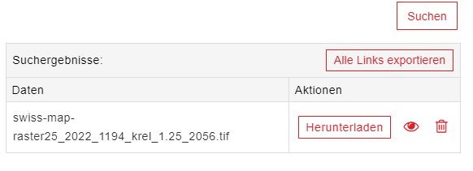

Raster Data is basically one or three colors being indicated for each cell or pixel. It contains the following elements:
Cells: Each SpatRaster is divided into rectangular cells of equal area, defined by rows and columns.
Layers: Each cell can have multiple values, which are stored in layers. This allows for the representation of different variables or time steps.
Coordinate Reference System (CRS): The spatial reference system used to define the coordinates of the cells.
Extent: The geographical area covered by the SpatRaster.
Resolution: The size of each cell in the coordinate reference system units.
There are two ways of storing raster data (maps):
In spatial data, particularly in raster images, RGB and color tables are two different methods for representing color information. Let’s delve into both concepts to understand their differences and uses.
1.1 1. SpatRaster RGB
An RGB (Red-Green-Blue) SpatRaster is a multi-band raster object that stores color information in three separate bands (or channels) corresponding to the red, green, and blue components of the image. Each band contains pixel values ranging from 0 to 255 (in an 8-bit format), which define the intensity of the respective color for that pixel. When these three bands are combined, they produce a full-color image.
1.1.1 Characteristics of SpatRaster RGB:
Multi-Band: RGB raster consists of three bands (or layers), each representing one of the red, green, and blue color channels.
Direct Color Representation: Each pixel’s color is directly defined by its red, green, and blue values.
Higher Storage Requirement: Since each color component is stored separately, RGB rasters generally require more storage space than color-table rasters.
Versatility: Supports a wide range of colors (potentially millions) and is suitable for true-color images such as satellite imagery, photographs, and maps requiring high detail.
1.1.2 Example of Use:
RGB rasters are often used in satellite imagery or aerial photographs where true color representation is needed to accurately display the scene. For example, a satellite image of a forest may use RGB bands to show the different shades of green in vegetation.
1.2 2. SpatRaster with Color Tables
A SpatRaster with a color table is a single-band raster object where each pixel value corresponds to an index in a color table. The color table is a lookup table that maps pixel values to specific colors (usually defined in RGB format). This method reduces the amount of data needed to store the image by storing only an index instead of a full RGB value for each pixel.
1.2.1 Characteristics of SpatRaster with Color Tables:
Single-Band: The raster itself contains only one band with integer values representing indices in the color table.
Indexed Color Representation: Color is represented indirectly through a color table, which maps indices to specific RGB values.
Lower Storage Requirement: This method can significantly reduce storage requirements, especially when the number of colors in the image is limited.
Limited Color Range: The number of colors is limited by the size of the color table. This method is less suitable for true-color images but is well-suited for thematic maps, land cover classifications, or other types of discrete data.
1.2.2 Example of Use:
A SpatRaster with a color table is typically used for thematic or categorical maps, such as a land use/land cover map, where each color represents a different type of land use (e.g., forest, water, urban).
1.3Key Differences:
Feature
SpatRaster RGB
SpatRaster with Color Tables
Bands
Multi-band (usually 3: Red, Green, Blue)
Single-band with color indices
Color Representation
Direct, using three separate channels (RGB)
Indirect, using a color lookup table
Storage Requirement
Higher (stores three separate values per pixel)
Lower (stores only an index per pixel)
Color Range
Wide range (millions of colors)
Limited by the number of entries in the color table
Best Use Cases
True-color images, photos, satellite imagery
Thematic maps, categorical data
1.3.1 Conclusion:
SpatRaster RGB is ideal for images requiring true-color representation, where a wide range of colors and high detail is necessary.
SpatRaster with color tables is more efficient for images with a limited number of colors, such as categorical or thematic maps, due to its lower storage requirements.
1.4 Different Maps available on Swisstopo
1.4.1 Documentation of Maps
Find details about products available on Swisstopo here: here (pdf). An exhaustive description of the maps and their features is avilable in the pdf.
1.4.2 Get upated Maps into R as spatvectors
Follow this link to the corresponding map or use the below table and select th desired map. This is not required for 1:200’000 and above since here, a map of entire Switzerland is imported.
Map Type
Description
Link
National Map 1:25,000
Detailed topographic map with high accuracy, suitable for hiking and outdoor activities.
On the Page for the selected Maps a tool to select specific maps will appear at the bottom which will similar to this image (depending on selected resolution):

Select the desired map by clicking on it. Selected map turns green. It can be downloaded by right-clicking the link “Herunterladen” as shown here:

1.4.3 REST Interface: Spatial Temporal Asset Catalog API
The data.geo.admin.ch Spatial Temporal Asset Catalog – API is a «dataset based» download service providing access to packaged geospatial data and related metadata. Find more information here.
We see that the Raster ZR is made of three layers representing the colors red, green and blue. These are rendered using ‘geom_spatraster_rgb’. We see that the mao to the right is pixelated and containes way less details then the one to the left. However they show the exact same extent of the geography.